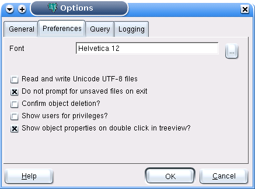

pgAdmin Options - Tab 2 (Preferences)

- Font - This option allows you to select the font used in
as standard font throughout pgAdmin. This may be useful for
countries with multibyte character sets where standard fonts may not
display well, or if you want to use a font different from the one
configured on your system.
- Read and write Unicode UTF-8 files - Select this option
to enable pgAdmin if you want to write Unicode UTF-8 files by
default.
- Do not prompt for unsaved files on exit - Selecting this option
will prevent pgAdmin from prompting you to save SQL queries upon
exit.
- Confirm object deletion? - Select this option to ensure pgAdmin
gives you a chance to confirm before objects are deleted
(recommended).
- Show users for privileges? - When viewing the Privileges tab on
objects that support them, selecting this option will include usernames as
well as groups in the subject list. Switching off this option is useful on
large systems with many users that are organised in groups.
- Show object properties on double click in treeview? - Selecting
this option will allow double clicking of objects in the treeview
to open the Properties dialogue for that object. Some users prefer
to disable this option to browse the treeview by double clicking
instead.